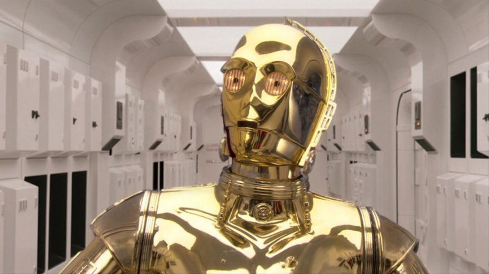

C3-PO
Protocol droidC-3PO was a 3PO-series protocol droid designed to interact with organics, programmed primarily for etiquette and protocol. Sometimes referred to as Threepio, he was fluent in over six million forms of communication, and developed a fussy and worry-prone personality throughout his many decades of operation. Along with his counterpart, the astromech droid R2-D2, C-3PO constantly found himself directly involved in pivotal moments of galactic history, and aided in saving the galaxy on many occasions.
"We seem to be made to suffer. It's our lot in life."
―C-3PO
C-3PO remained constant companions with R2, and in 0 BBY, the pair became embroiled in the Galactic Civil War when Leia Organa of the Rebel Alliance entrusted them to bring a copy of the Death Star plans to the Jedi Master Obi-Wan Kenobi on Tatooine. After meeting Skywalker's son, Luke and the smuggler Han Solo, the droids helped rescue Princess Leia from the Empire's Death Star. They became directly attached to the three humans, helping them and their rebellion defeat the Empire and restore freedom to the galaxy, most notably when he convinced the Ewoks to aid the Rebels at the Battle of Endor.